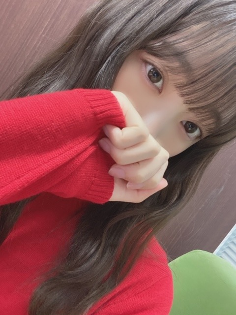
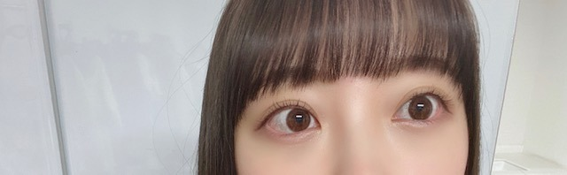
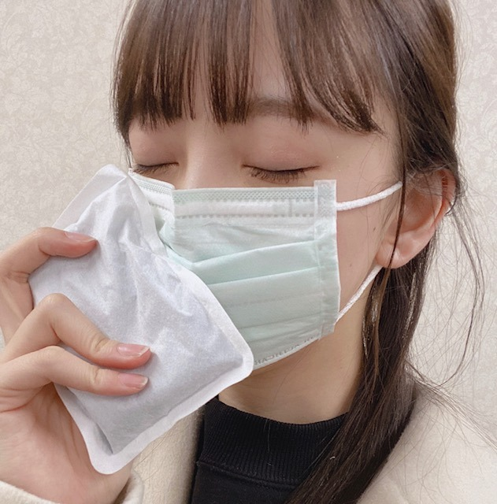

2020/0415Wed猿

dTVにて配信中です!
見てくださいましたか？？
かきちゃん、ゆな、れいちゃんと一緒に
撮影できて良かったです☺︎

感想お聞かせくださーい!
あと、薄めメイクがいいよと
コメントいただきますがたまに載せてる
強めメイクとかはリクエストいただいて
おうち時間を利用して
遊びとしてやっているものですので
それでこれから歌番組などに出るわけではありません
ファンの方との交流のひとつの
話題として家でいろんなメイクをして
写真撮ったりしてます
どんどん変わっていってる...って不安にならないでくださいね。笑
でも勘違いされるのもいやなので
しばらくやめます
ということで
みなさんのおすすめの曲、MV
を教えてください
いろんなアーティストさんのMVを観て
私なりの解釈や感想をあげていきたいとおもいます
勉強になりそうだ〜(｡･ω･｡)！
ではは
メンバーに会いたいよ( ; _ ; )
みなさんにも( ; _ ; )
泣

2020/04/15 21:12


コメント(728)
チャァオ～～!☆彡
みおちゃん❕❤️❤️❤️❤️❤️❇️❇️❇️笑顔
素敵だよ～～～⤴️⤴️❕❤️❤️❤️❤️❤️❇️❇️❇️笑顔
(σ≧▽≦)σ❤️❤️❤️❇️❇️❇️
❇️❇️おすまし！より⚜️❇️彡
嵐さんのonelove rebornていう曲と、back numberさんの繋いだ手からていう曲おすすめです！
嵐さんの方はYou Tubeにフルバージョンで配信されていて、back numberさんの方はYou Tubeにショートバージョンで配信されています！
わたしは、昨日アナスターシャを踊っていて、踊れるようになりました！
おすすめの曲はミセスグリーンアップルさんの「僕のこと」です！勇気が出ます！
大好きです。これからも応援してます!
ブログやインスタでいつも楽しませてくれてありがとう〜
暫くないとの事で寂しい…(´･_･`)
未央奈が女の子として自由にメイクしてこちらを楽しませてくれて、めちゃくちゃたのしいです！
コスメも似合っていてすごいなと尊敬してます。(`･ω･´)
また気が向いたら再開するの楽しみにしてるね。
個人的には韓国風の未央奈めちゃくちゃツボでした
いつもありがとうございます。
ブログや７５５をマメに更新してくれたり
画像沢山載せてくれたり
優しさを日々感じてます
僕は男なのでメイクは解らないですが
未央奈さんの元気な顔が見れたら
それだけで嬉しいです(´∀｀)
サンクエトワールの話とか
過去の話で今なら言える話があれば
嬉しいです。
後、未央奈さんにとってななみんって
どんな存在だったのかなぁって
ななみん気にかけてたというか
未央奈さんに優しかったイメージがあって
…………………………………………
僕もストレッチと筋トレ飽きながらも
毎日やってます。
いつまでかわからない自粛ですが
お互い頑張りましょう( ^ω^ )
早く会いたいなぁ…
_CHiCO with HoneyWorksさん！
_RED eyeさん 少年A
_FAKYさん half moon, ANTIDOTE
_novel coreさん
_key - bring it on my destiny
↑アニメ、D.グレの主題歌！このアニメグロいけど面白いよ！
_いのちの名前
たくさんごめんなさい
メイク濃いめも薄めもどっちもかわいーぞー
いろんな未央奈がみたい
RadioheadのNo Surprisesって曲。
しあわせの保護色のジャケ写にちょっと通じるところもあるよ
一見シンプルな作りだけど、凄く繊細な構成になってて、曲の雰囲気と凄くマッチしてる素敵な作品だよ
かわいい
なんなら見たいし笑
猿に会う、見ましたー！
演技上手すぎです
最高でした！
未央奈さんのメイクはどれもすごく似合ってて、
可愛くて、いつも参考にさせてもらってます。
いつもありがとう
インスタも見てます
これからも体調に気を付けて頑張ってください
大好きです
ではは
今は外に出られないから楽しみが減っちゃったなって思ってたけど、未央奈ちゃんがブログをたくさん更新してくれるからそれが楽しみになってます！ありがとう✿
薄めメイクの未央奈ちゃんも濃いめのメイクで大人っぽい未央奈ちゃんもホントにかわいい♡私はメイク詳しくなくて上手に出来ないけど、上手な未央奈ちゃんの見てこうするといいんだなーとか勉強してます！
画面越しだけどかわいい未央奈ちゃんが見られて幸せです！
これからも体調に気をつけて頑張ってください！
猿に会う見たいのにまだ見られてないよ。何故かdTV登録が上手くいかないのよね。早く見たい。
色々なメイクを見せてくれるのも、メイク好きな未央奈らしくて楽しいのにね。どんな未央奈も好きだから、未央奈は未央奈らしく自由にやってね。
オススメMVかー。VAN HALENのCan't Stop Lovin' Youは良いMVだと思う。
あとCHAGE AND ASKAのOn Your MarkのMVはジブリだよ。
僕は最近Work Of Artっていうバンドが好き。
未央奈に会いたいよー。
では！
ちょっと重たい内容かも知らんけど、ホンマに響くもんがあると思うし、堀ちゃんの感想聞きたい！
もし、amazarashiいいなと思ったら他も聴いてみてね
私のおすすめの曲
⇊
・Mrs.GREEN APPLE＿春愁
・Uru_あなたがいることで
です！
私の好きなmvは 君と羊と青 という曲のmvです！
未央奈ちゃん色白なので基本どんな色のメイクでも似合うと思いますよ
リクエストで赤系のメイクお願いします
リップ結構濃いめの赤で
またブログ更新待ってます
ただ一つ、本当に可愛い！
市区町村に比べて一番らしい！
人口が多いのもあるし若い世代、その中でも40代
以上がたくさん住んでいるのもあるらしい
だって他の県より比べて、その中で世田谷区と
比べると世田谷の方が多いんだって
港区、新宿区に比べて感染率が少ないらしいんだけども
世田谷はベッドタウンでもあり栄えてるじゃん！
THE ORAL CIGARETTESのLOVEって言う曲はおすすめだよ！
体調に気をつけてこれからも頑張ってください！
ONE S′ MORE / 仮谷せいら
透明少女 feat.MACHO / 5lack
Easy Breezy / chelmico
が個人的におすすめです！
すみません、多く書いちゃいました…(´・ω・`)
sweet summer sun です映像きれいです
たくさん更新してくれて、嬉しい(*ﾟ∀ﾟ)*｡_｡)*ﾟ∀ﾟ)*｡_｡)早く会いたい～❤️好きーーーーーーー
未央奈ちゃんのメイクめっちゃ好きだから何を言われようと未央奈ちゃんらしくいてほしい
未央奈ちゃんのことが大好きすぎるひとで溢れているよ～
会えるの楽しみにしてるね！
TwiceのMVとかおすすめ！！！！
今日も大好きです！！
未央奈さんの演技すごかったです！
Mr.Childrenさんの終わりなき旅がオススメです！
他にもいい曲が沢山あるので聞いてみてください。
俺はどちらも好き。というか、未央奈が好き
身体に気をつけてね？
未央奈の握手会今度初めて行こうと思ってたら、、こんなことに。。今は家でLIVE映像みてモチベーションあげときます。
それでは昼寝してきます。おやすみ(´O｀)
でてくるとこ何回見ても鳥肌です笑
それにしてもおうちですること考えなきゃ、、
うーん。どうぶつ私もほしいなあ
まずSwitchがない！
未央奈ちゃんおうち時間楽しんでね
嵐のturningupはめちゃいいですよ！
いつもブログありがとうございます。
ノリやすいメロディーが可愛くてウキウキしますが実は暗い曲だったり
北上のすすめが好きかな〜
まぁ未央奈さんの方が可愛いのは言うまでもないですけとね（笑）
未央奈ちゃんのナチュラルメイク、私も大好きです
黒髪ロングも見てみたいなぁなんて、
ちなみにおすすめのMVは≠meの、≠meっていうMV！
曲がクセになります！
未央奈ちゃん 健康で幸せに過ごせますように。
はなより
WONKのOrange Mug
King Gnu(Srv.Vinci)のサマーレイン・ダイバー
もし聞いてみたら感想教えて！
お勧めMV
new order perfect kiss
全編１０分の長大作です。
後半のたたみ掛ける様な展開が、素晴らしいです。
古いＰＶですが、ＰＶの一方の極地として、
一見の価値有りと思います。
コメントする